<!DOCTYPE html>
<html lang="ml">
<head>
  <meta charset="utf-8">
  <meta name="viewport" content="width=device-width, initial-scale=1.0">
  <title>Chapter 1 (Pages 7-26) - Class 9 Biology</title>
  <style>

:root {
  --bg-color: #fcfcfd;
  --card-bg: #ffffff;
  --text-color: #1e293b;
  --text-muted: #64748b;
  --primary-color: #0284c7;
  --primary-light: #e0f2fe;
  --border-color: #e2e8f0;
  --radius: 10px;
  --shadow: 0 4px 6px -1px rgb(0 0 0 / 0.05), 0 2px 4px -2px rgb(0 0 0 / 0.05);
}

body {
  font-family: -apple-system, BlinkMacSystemFont, "Segoe UI", Roboto, "Noto Sans Malayalam", "Manjari", "Gayathri", sans-serif;
  background-color: var(--bg-color);
  color: var(--text-color);
  line-height: 1.8;
  font-size: 1.1rem;
  margin: 0;
  padding: 0;
}

.container {
  max-width: 860px;
  margin: 0 auto;
  padding: 2.5rem 1.5rem 5rem 1.5rem;
}

header {
  margin-bottom: 2.5rem;
  padding-bottom: 1.5rem;
  border-bottom: 2px solid var(--border-color);
}

.badge-row {
  display: flex;
  gap: 0.5rem;
  margin-bottom: 0.75rem;
  flex-wrap: wrap;
}

.badge {
  display: inline-block;
  font-size: 0.75rem;
  font-weight: 700;
  text-transform: uppercase;
  letter-spacing: 0.05em;
  padding: 0.25rem 0.65rem;
  border-radius: 9999px;
  background: var(--primary-light);
  color: var(--primary-color);
}

.badge-medium {
  background: #fef3c7;
  color: #b45309;
}

.badge-class {
  background: #dcfce7;
  color: #15803d;
}

h1 {
  font-size: 2.1rem;
  font-weight: 800;
  margin: 0.5rem 0 1rem 0;
  line-height: 1.3;
  color: #0f172a;
}

.nav-bar {
  display: flex;
  justify-content: space-between;
  margin: 1.5rem 0;
  font-size: 0.95rem;
  flex-wrap: wrap;
  gap: 0.5rem;
}

.nav-bar a {
  color: var(--primary-color);
  text-decoration: none;
  font-weight: 600;
  padding: 0.5rem 1rem;
  border-radius: var(--radius);
  background: var(--card-bg);
  border: 1px solid var(--border-color);
  transition: all 0.2s ease;
}

.nav-bar a:hover {
  background: var(--primary-light);
  border-color: var(--primary-color);
}

.nav-bar .disabled {
  color: var(--text-muted);
  pointer-events: none;
  border-color: transparent;
  background: transparent;
}

.page-section {
  background: var(--card-bg);
  border: 1px solid var(--border-color);
  border-radius: var(--radius);
  box-shadow: var(--shadow);
  padding: 2rem;
  margin-bottom: 2.5rem;
}

.page-header {
  display: flex;
  align-items: center;
  justify-content: space-between;
  margin-bottom: 1.25rem;
  padding-bottom: 0.5rem;
  border-bottom: 1px dashed var(--border-color);
}

.page-number {
  font-size: 0.8rem;
  font-weight: 700;
  text-transform: uppercase;
  color: var(--text-muted);
  letter-spacing: 0.05em;
}

.page-content p {
  margin: 0 0 1.25rem 0;
  white-space: pre-wrap;
  word-break: break-word;
}

.page-content p:last-child {
  margin-bottom: 0;
}

.diagram-card {
  margin: 2rem 0;
  text-align: center;
  background: #f8fafc;
  border: 1px solid var(--border-color);
  border-radius: var(--radius);
  padding: 1rem;
  overflow: hidden;
}

.diagram-card img {
  max-width: 100%;
  height: auto;
  border-radius: calc(var(--radius) - 4px);
  display: inline-block;
  box-shadow: 0 2px 4px rgba(0,0,0,0.04);
}

.diagram-card figcaption {
  font-size: 0.85rem;
  color: var(--text-muted);
  margin-top: 0.75rem;
  font-weight: 500;
}

footer {
  margin-top: 3rem;
  padding-top: 2rem;
  border-top: 2px solid var(--border-color);
}

  </style>
</head>
<body>
  <div class="container">
    <header>
      <div class="badge-row">
        <span class="badge badge-class">Class 9</span>
        <span class="badge badge-medium">Malayalam Medium</span>
        <span class="badge">Biology</span>
        <span class="badge">Part 1</span>
      </div>
      <h1>Chapter 1 (Pages 7-26)</h1>
      <div class="nav-bar"><span class="nav-bar disabled"></span><a href="index.html">☰ Index</a><a href="part_1_chapter_02.html">Chapter 2 (Pages 27-46) →</a></div>
    </header>
    <main>
      <section class="page-section" id="page-7">
  <div class="page-header"><span class="page-number">Page 7</span></div>
  <figure class="diagram-card" id="fig_ch01_p007_01"><figcaption>Figure fig_ch01_p007_01 (Page 7)</figcaption></figure>
  <div class="page-content">
    <p>zœ“”šȻc IX</p>
    <p>zœ“ÆƂ⛍s‘›¢Ú§</p>
    <p>y ¡Œǯš¡Šš‘›–c
y Ƃsš”–c¢nj•“c
¢ˆš•sā‘c
y fŦŽˆŽ›ǚ›‚›c
–Œǚ›‚›c
y ––Dz¢–“†āÇ
y ƃš–§ŒšǙŽ“c
y ––Dz–cŽäc
ˆ„šÅƒ“›†›Œ“c</p>
    <p>7</p>
  </div>
</section><section class="page-section" id="page-8">
  <div class="page-header"><span class="page-number">Page 8</span></div>
  <figure class="diagram-card" id="fig_ch01_p008_01"><figcaption>Figure fig_ch01_p008_01 (Page 8)</figcaption></figure>
  <div class="page-content">
    <p>zœ“”šȻc IX</p>
    <p>zœ“¡ź‚š¢ÚšÆ
”šȼś¡ź¢–‰›Æ
ÕŅ›ŒŒš›zœ“ÄǔǏ›Úš†š“¢Œš#
mŅ¢šsšcŒƠ§”šȻc
n¡Ǯ}Ĺ¡“Ƽ“›‘›š›‚§
e‚›†¢“Ĭ›ǫNJŒāÇ‚œƿŒš‚§
gŽˆĹ›¡šųšc†žǮšĬ›¡ź
f„DZ„”scˆ›ų›Ğ‚›†¢”•Œš§
†›ŽŦŽˆŽ›NJŒāǡښ}“›Æ
z†›‚smĕ›†œ›ā›ž¡}f„DZ¡Ĺ
ÕŅ›ŒŠšÜœŽ›šƒšÅƒDZŒš›s}›c
ŒĴ›czœ“›Úųg¢sš‘›(E.coli)
ŠšÜœŽ›¡š§¢scƖ›§z›¡pŽ
–cvcu¢“•sÅÕŅ›ŒŽœ‚››ž¡}
ǔǏ›ă‚§–š“ š†Ĺ›š¡ÿ›c
“‘Žų‚›†c“›‹z›Úų‚›†c
ÕŅ›ŒŠšÜœŽ›Ʃ§s’›c</p>
    <p>†œDZžƃ›¢ÚǮš
|š†šp›z›†Æ</p>
    <p>p›z›†cDZž
ƃ›¢ÚǮc
pųŒ›Ƽ†ƣÇ
ŽĬc
ŠšÜœŽ›s‘šm
¡ųšŠ›Æ
†›Åƣ›ă‚š¡
¢ųiǫž</p>
    <p>ƂՂ››Æsš¡ƀ}ųŠšÜœŽ›cšŠ›Æ†›Åƣ›Ú¡ƀĞ
ŠšÜœŽ›c ‚ƣ›ǫ –šÿƹ›s –c‹š•Œš§ Œs‘›Æ
¡sš}Ĺ›Ž›Úų‚§ ”šȻ¢šsŧ –c‹“›ă “›–§ŒsŽŒš
Œ¢ųǮcf›ŽųÕŅ›ŒŠšÜœŽ›¡}†›Åƣšc
x†cƂ‚›sŽc”Ǵ–†c“‘ÅăƂ‚DZÆˆš„†c‚}ā›“
š§ zœ“äāÇzœ“¡źv}†šˆŽ“czœ“ ÅƣˆŽ“
Œše}›Ǚš†v}sc¢sš”cf¡ų§ †›āÇڏ›šŒ¢Ƽš
¢sš”ā‘›š§ zœ“¡ź†›†›Æƀ›†š šŽŒš Žš–Ƃ“ÅĹ
†āÇŒtDZŒšc†}ڝų‚§
¢sš”v}†Ʃc ¢sš”ā‘›Æ †}ڝų Ƃ“ÅņāÇڝc
†›Ž“ › ‚ŶšŅsÇ f“”DZŒš§ sšÅŠÃ £—ĦzÄ
qs§–›zÄ £†ğzÄ ¢‰šǝ–§ sšŇDZc mų›ā¡†ǫ
ŒžsāÇ ˆ‚ŽĹ›Æ sž}›¢ăÅųš§ h ‚ŶšŅsÇ Žžˆ
¡ƀ}ų‚§
8</p>
  </div>
</section><section class="page-section" id="page-9">
  <div class="page-header"><span class="page-number">Page 9</span></div>
  <figure class="diagram-card" id="fig_ch01_p009_01"><figcaption>Figure fig_ch01_p009_01 (Page 9)</figcaption></figure>
  <figure class="diagram-card" id="fig_ch01_p009_02"><figcaption>Figure fig_ch01_p009_02 (Page 9)</figcaption></figure>
  <figure class="diagram-card" id="fig_ch01_p009_03"><figcaption>Figure fig_ch01_p009_03 (Page 9)</figcaption></figure>
  <figure class="diagram-card" id="fig_ch01_p009_04"><figcaption>Figure fig_ch01_p009_04 (Page 9)</figcaption></figure>
  <figure class="diagram-card" id="fig_ch01_p009_05"><figcaption>Figure fig_ch01_p009_05 (Page 9)</figcaption></figure>
  <figure class="diagram-card" id="fig_ch01_p009_06"><figcaption>Figure fig_ch01_p009_06 (Page 9)</figcaption></figure>
  <figure class="diagram-card" id="fig_ch01_p009_07"><figcaption>Figure fig_ch01_p009_07 (Page 9)</figcaption></figure>
  <figure class="diagram-card" id="fig_ch01_p009_08"><figcaption>Figure fig_ch01_p009_08 (Page 9)</figcaption></figure>
  <figure class="diagram-card" id="fig_ch01_p009_09"><figcaption>Figure fig_ch01_p009_09 (Page 9)</figcaption></figure>
  <figure class="diagram-card" id="fig_ch01_p009_10"><figcaption>Figure fig_ch01_p009_10 (Page 9)</figcaption></figure>
  <figure class="diagram-card" id="fig_ch01_p009_11"><figcaption>Figure fig_ch01_p009_11 (Page 9)</figcaption></figure>
  <figure class="diagram-card" id="fig_ch01_p009_12"><figcaption>Figure fig_ch01_p009_12 (Page 9)</figcaption></figure>
  <figure class="diagram-card" id="fig_ch01_p009_13"><figcaption>Figure fig_ch01_p009_13 (Page 9)</figcaption></figure>
  <figure class="diagram-card" id="fig_ch01_p009_14"><figcaption>Figure fig_ch01_p009_14 (Page 9)</figcaption></figure>
  <figure class="diagram-card" id="fig_ch01_p009_15"><figcaption>Figure fig_ch01_p009_15 (Page 9)</figcaption></figure>
  <figure class="diagram-card" id="fig_ch01_p009_16"><figcaption>Figure fig_ch01_p009_16 (Page 9)</figcaption></figure>
  <figure class="diagram-card" id="fig_ch01_p009_17"><figcaption>Figure fig_ch01_p009_17 (Page 9)</figcaption></figure>
  <figure class="diagram-card" id="fig_ch01_p009_18"><figcaption>Figure fig_ch01_p009_18 (Page 9)</figcaption></figure>
  <figure class="diagram-card" id="fig_ch01_p009_19"><figcaption>Figure fig_ch01_p009_19 (Page 9)</figcaption></figure>
  <figure class="diagram-card" id="fig_ch01_p009_20"><figcaption>Figure fig_ch01_p009_20 (Page 9)</figcaption></figure>
  <div class="page-content">
    <p>zœ“”šȻc IX</p>
    <p>sšÅ¢Šš£—¢ĦǮ§ ¢ƂšĞœÄ ›ƀ›§ †DZžã›s§ f–›§
mų›“ zœ“¡ź e}›Ǚš† †›Åƣšv}sā‘š§ g“
Š¢š¢Œš‘›sDZž‘sÇ(Biomolecules)mų›¡ƀ}ų
Š¢š¢Œš‘›sDZž‘s¡‘ڝ›ă§x“¡}†Æs››Ž›Úų
x›ŅœsŽc1.1“›”s†c¡xƪ§ šŽ £s“Ž›Úž</p>
    <p>i„š—ŽāÇ
øž¢Úš–§
Ƌ¢Üš–§</p>
    <p>sšÅ¢Šš£—¢ĦǮsÇ</p>
    <p>–ž¢âš–§
ǡšÅă§
¡–Ƽ¢š–§
¡sš’ƀsÇ</p>
    <p>›ƀ›sÇ
mĴsÇ</p>
    <p>Š¢š¢Œš‘›sDzž‘sÇ</p>
    <p>mÄ£–ŒsÇ
¢ƂšĞœ†sÇ</p>
    <p>¢—šÅ¢ŒšsÇ
fź›¢Šš›sÇ</p>
    <p>†DZžã›s§f–›sÇ</p>
    <p>DNA
RNA</p>
    <p>x›ŅœsŽc 1.1 Š¢š¢Œš‘›sDZž‘sÇ
Š¢š¢Œš‘›sDZž‘sÇÚ§ sž}‚Æ i„š—ŽāÇ
s¡Ĭśx›ŅœsŽc“›ˆœsŽ›Úž
Š¢š¢Œš‘›sDZž‘s‘c ŒǮ†“ › Žš–v}sā
‘c ¢xÅų§ †}ŝų Ƃ“Åņā‘›ž¡}š§
zœ“äā¡‘ƼšcƂs}Œšsų‚§pŽzœ“››Æ
†}ڝų eŎc Žš–Ƃ“Åņā¡‘ pųš¡s
¡ŒǮš¡Šš‘›–c(Metabolism)mų§ ˆų
¡ŒǮš¡Šš‘›–¡Ĺ ŽĬš› ‚›Ž›Úšc ‚ŶšŅs¡‘
sžĞ›¢ăÅڝų e†š¡Šš‘›–“c (Anabolism)
‚ŶšŅs¡‘ “›v}›ƀ›Úų sǮš¡Šš‘›–“c
(Catabolism).</p>
    <p>x“¡} ¢xÅśŽ›Úųx›ŅœsŽc1.2ˆžÅśšÚ›
¡ŒǮš¡Šš‘›–¡ĹƀǮ› šŽ £s“Ž›Úž
9</p>
    <p>pŽ sĚ
sÚ›¡ź“ƀc
Œ†•DZ”ŽœŽĹ›Æns¢„”c
37 ğ›DZâsš”ā‘Ĭ§
q¢Žš ¢sš”Ĺ›c
q¢Žš ¡–Úź›c100
¢sš}›Žš–Ƃ“ÅņāÇ
†}ڝų¡Ĭųš§
sÚ§eā¡†¡ÿ›Æ
pŽ¡–Úź›Æ
”ŽœŽ¢sš”ā‘›š¡s
†}ڝųŽš–Ƃ“ÅņāÇ
mŅš§#
“š›ă§ ¢†šÚž
37000000000000000000000.</p>
  </div>
</section><section class="page-section" id="page-10">
  <div class="page-header"><span class="page-number">Page 10</span></div>
  <figure class="diagram-card" id="fig_ch01_p010_01"><figcaption>Figure fig_ch01_p010_01 (Page 10)</figcaption></figure>
  <figure class="diagram-card" id="fig_ch01_p010_02"><figcaption>Figure fig_ch01_p010_02 (Page 10)</figcaption></figure>
  <figure class="diagram-card" id="fig_ch01_p010_03"><figcaption>Figure fig_ch01_p010_03 (Page 10)</figcaption></figure>
  <figure class="diagram-card" id="fig_ch01_p010_04"><figcaption>Figure fig_ch01_p010_04 (Page 10)</figcaption></figure>
  <figure class="diagram-card" id="fig_ch01_p010_05"><figcaption>Figure fig_ch01_p010_05 (Page 10)</figcaption></figure>
  <figure class="diagram-card" id="fig_ch01_p010_06"><figcaption>Figure fig_ch01_p010_06 (Page 10)</figcaption></figure>
  <figure class="diagram-card" id="fig_ch01_p010_07"><figcaption>Figure fig_ch01_p010_07 (Page 10)</figcaption></figure>
  <figure class="diagram-card" id="fig_ch01_p010_08"><figcaption>Figure fig_ch01_p010_08 (Page 10)</figcaption></figure>
  <div class="page-content">
    <p>zœ“”šȻc IX</p>
    <p>¡ŒǮš¡Šš‘›–c</p>
    <p>e†š¡Šš‘›–c</p>
    <p></p>
    <p></p>
    <p></p>
    <p>sšÅŠÃ£qs§£–c
z“ciˆ¢šu›ă§––DZāÇ
øž¢Úš–§†›Åƣ›Úų</p>
    <p>¢ƂšĞœÄ“›v}†c</p>
    <p>¢ƂšĞœÄ“›v}›ă§
eŒ›¢†šf–›s‘š›Œšų</p>
    <p>x›ŅœsŽc 1.2 ¡ŒǮš¡Šš‘›–c
¡ŒǮš¡Šš‘›–¡Ĺ †›ũ›Úš†c –—š›Úš†c
mÄ£–ŒsÇ (Enzymes) ¢—šÅ¢ŒšsÇ (Hormones) mųœ
Š¢š¢Œš‘›sDZž‘s‘c¢sš”Ĺ›†ǫ›Æ†›Åƣ›Ú¡ƀ}ųĬ§
x“¡} †Æs› “›“Žc “›”s†c ¡xƪ§ g“¡ƀǮ›
šŽ £s“Ž›Úž “›“Ž¢”tŽĹ›ž¡} sž}‚Æ
i„š—ŽāÇs¡ĬŞ</p>
    <p>mÄ£–Œs‘c¢—šÅ¢Œšs‘c
zœ“›s‘›Æ q¢Žš†›Œ›•“c †}ڝų e–ctDZc
Žš–Ƃ“Åņā‘¡} ¢“u‚ “Å ›ƀ›ÚšÄ –—š
›Úų ‚ŶšŅs‘š§ mÄ£–ŒsÇ Œ›Ú mÄ
£–Œs‘c ¢ƂšĞœ†s‘š§  iŒ›†œŽ›¡ –£“›
eŒ›¢–§ fŒš”Ž–Ĺ›¡ ¡ˆƄ›Ä mų›“
mÄ£–ŒsÇÚ§i„š—Žā‘š§
zœ“ÆƂ“Åņā¡‘ †›ũ›Úsc n¢sšˆ›
ƀ›Úsc ¡xƭų Žš–‚ŶšŅs‘š§ ¢—šÅ¢Œš
sÇ g“¡ iƈš„›ƀ›Úų‚§ “›“› 
mÄ¢š£âÄ ÷Ū›s‘š§ (Endocrine glands)
£cu›sš““ā‘¡}Ƃ“Åņ¡Ĺ†›ũ›Úų
¡}¢ǡšǡœ¢šÃh–§¢ğšzÄ¢Ƃšz–§¢ğšÃmų›“
¢—šÅ¢ŒšsÇÚ§i„š—Žā‘š§</p>
    <p>10</p>
  </div>
</section><section class="page-section" id="page-11">
  <div class="page-header"><span class="page-number">Page 11</span></div>
  <figure class="diagram-card" id="fig_ch01_p011_01"><figcaption>Figure fig_ch01_p011_01 (Page 11)</figcaption></figure>
  <figure class="diagram-card" id="fig_ch01_p011_02"><figcaption>Figure fig_ch01_p011_02 (Page 11)</figcaption></figure>
  <figure class="diagram-card" id="fig_ch01_p011_03"><figcaption>Figure fig_ch01_p011_03 (Page 11)</figcaption></figure>
  <div class="page-content">
    <p>zœ“”šȻc IX</p>
    <p>zœ“›s‘›Æ ¡ŒǮš¡Šš‘›–Ĺ›†§ f“”DZŒš x› v}sāÇ ¢sš”Ĺ›†ǫ›Æ
†›Åƣ›Ú¡ƀ}ų¡Ĭų§ Œ†–›šÚ›¢Ƽš ¡ŒǮš¡Šš‘›–Ĺ›†š“”DZŒš ŒǮ†“ ›
v}sāÇe“¡}Šš—DZˆŽ›Ǚ›‚››Æ†›ųš§‹›Úų‚§e“n¡‚š¡Úš§
mų§›ǡ§¡xƭž


Šš—DZˆŽ›Ǚ›‚››Æ†›ų§ ˆ„šÅƒāÇ ¢sš”Ĺ›†ǫ›¡Ĺų¡‚ā¡†¡ų§
x›Ŧ›ă›Ğ¢Ĭš#
x›ŅāÇ 1.1(a), 1.1(b), 1.1(c) mų›“c “›“Ž“c “›”s†c ¡xƪ§ xÅă¡xƪ§
šŽ£s“Ž›Úž
eŒœŠ</p>
    <p>zŦÚÇ</p>
    <p>Šš—DZˆŽ›–Žc</p>
    <p>¢sš”āÇڛ}›¡ŝ“c</p>
    <p>ns¢sš”zœ“›s‘›Æ
Šš—DZˆŽ›–ŽĹ†›ųc
ˆ„šÅƒāÇ¢sš”ǘŽ
śž¡}¢sš”ŝ“DZś†
s¢ĹÚ§Ƃ¢“”›Úų</p>
    <p>Šš—DZˆŽ›Ǚ›‚››Æ†›ųc–ǴœsŽ›Úų
ˆ„šÅƒāÇx›ŒšǮāÇڝ“›¢ Œš›
¢sš”āÇڛ}›¡ŝ“Ĺ›¢Ú§
mŝųe“›¡}†›ųc¢sš”ǘŽĹ›ž¡}
¢sš”ŝ“DZś¢Ú§Ƃ¢“”›Úų</p>
    <p>x›Ņc1.1(a)</p>
    <p>x›Ņc1.1(b)
––DZāÇ</p>
    <p>Šš—DZˆŽ›Ǚ›‚››Æ†›ų§ˆ„šÅƒāÇ“›“› ŒšÅuā‘›ž¡}š§¢sš”
ŝ“DZś¢Ú§Ƃ¢“”›Úų‚§
y ¢sš”‹›Ĺ››ž¡}¢sš”āÇڛ}›ǫ
ǙĹ›ž¡}
y ¡‚šĞ}Ĺ¢sš”ā¡‘ŠŰ›ƀ›Úų
ƃš–§¢Œš¡–§¢ŒǮmų
¢sš”ŝ“DZˆš‚s‘›ž¡}
y pŽ¢sš”Ĺ›Æ†›ųcŒ¡Ǯšų›¢Ú§
ƃš–§ŒšǘŽĹ›ž¡}
x›Ņc1.1(c)
11</p>
  </div>
</section><section class="page-section" id="page-12">
  <div class="page-header"><span class="page-number">Page 12</span></div>
  <figure class="diagram-card" id="fig_ch01_p012_01"><figcaption>Figure fig_ch01_p012_01 (Page 12)</figcaption></figure>
  <figure class="diagram-card" id="fig_ch01_p012_02">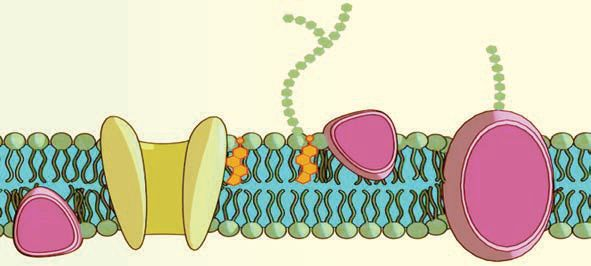<figcaption>Figure fig_ch01_p012_02 (Page 12)</figcaption></figure>
  <figure class="diagram-card" id="fig_ch01_p012_03">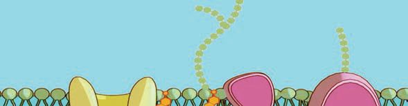<figcaption>Figure fig_ch01_p012_03 (Page 12)</figcaption></figure>
  <figure class="diagram-card" id="fig_ch01_p012_04"><figcaption>Figure fig_ch01_p012_04 (Page 12)</figcaption></figure>
  <figure class="diagram-card" id="fig_ch01_p012_05"><figcaption>Figure fig_ch01_p012_05 (Page 12)</figcaption></figure>
  <figure class="diagram-card" id="fig_ch01_p012_06"><figcaption>Figure fig_ch01_p012_06 (Page 12)</figcaption></figure>
  <figure class="diagram-card" id="fig_ch01_p012_07"><figcaption>Figure fig_ch01_p012_07 (Page 12)</figcaption></figure>
  <figure class="diagram-card" id="fig_ch01_p012_08"><figcaption>Figure fig_ch01_p012_08 (Page 12)</figcaption></figure>
  <figure class="diagram-card" id="fig_ch01_p012_09">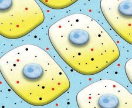<figcaption>Figure fig_ch01_p012_09 (Page 12)</figcaption></figure>
  <figure class="diagram-card" id="fig_ch01_p012_10"><figcaption>Figure fig_ch01_p012_10 (Page 12)</figcaption></figure>
  <figure class="diagram-card" id="fig_ch01_p012_11"><figcaption>Figure fig_ch01_p012_11 (Page 12)</figcaption></figure>
  <div class="page-content">
    <p>zœ“”šȻc IX</p>
    <p></p>
    <p>š¡
Šš—DZˆŽ›Ǚ›‚›¡¢ƀ
›
›‚
Ǚ
fŦŽˆŽ›
Œ¢Ĭš#</p>
    <p>sĞ›¡} –c”c NJŗ›ă¢Ƽš †›ā‘¡} j—c
s›Úž


x“¡}†Æs››Ž›Úų“›“Žc“›”s†c¡xƪ§
†›ā‘¡}j—Ĺ›¡ź–š ‚ˆŽ›¢”š ›Úž
zŦÚ‘›Æ  ¢sš”āÇڛ}›¡  ǙĹsš¡ƀ}ų  ŝ“c  ms§–§ğš
¡–ƼšÅ ŝ“c  fŦŽˆŽ›Ǚ›‚›š› “Åśڝų ––DZā‘›¡ fŦŽ
ˆŽ›Ǚ›‚››Æ¢sš”‹›Ĺ›ce‚›¡v}sā‘c¢sš”āÇڛ}›¡ŝ““c
“šes‘ciÇ¡ƀĞ›Ž›Úų
fŦŽˆŽ›Ǚ›‚›¡} v}† Ǚ›ŽŒš› †›†›Åŝų‚›¡† –ŒǙ›‚›ˆš†c
(Homeostasis) mų ˆų ¡ŒǮš¡Šš‘›–c –uŒŒš› †}ڝų‚›†§ fŦŽ
–ŒǙ›‚› †›†›ÅĹ¡ƀ¢}Ĭ‚Ĭ§ fŦŽˆŽ›Ǚ›‚›¡} Žš–v}† ‚s›}c
Œ›ĚšÆzœ“†§‹œ•›šsc
¡ŒǮš¡Šš‘›–Ĺ›†§ f“”DZŒšvv}sāÇfŦŽˆŽ›Ǚ›‚››Æ†›ųc ¢sš”
ǘŽĹ›ž¡} ¢sš”Ĺ›†ǫ›Æmŝųmų§Œ†Ǡ›š¢Ƽšg‚›†§¢sš”ǘŽcmŅ
ŒšŅce†¢šzDZŒš§#</p>
    <p>ˆ„šÅƒ“›†›Œc¢sš”ǙŽĹ›ž¡}
¢sš”ǘŽĹ›¡źv}†¡Ú›ă§†›āLj~›ă›ĞĬ§¢sš”ǘŽĹ›¡ŒtDZv}sāÇ
n¡‚ƼšŒš§#e“x›ŅœsŽc1.3Æe}š‘¡ƀ}Ĺž
fŦŽˆŽ›Ǚ›‚›</p>
    <p>¢sš”ǘŽc</p>
    <p>¢sš”ŝ“DZc</p>
    <p>x›ŅœsŽc1.3 ¢sš”ǘŽĹ›¡źv}†
12</p>
  </div>
</section><section class="page-section" id="page-13">
  <div class="page-header"><span class="page-number">Page 13</span></div>
  <figure class="diagram-card" id="fig_ch01_p013_01"><figcaption>Figure fig_ch01_p013_01 (Page 13)</figcaption></figure>
  <figure class="diagram-card" id="fig_ch01_p013_02"><figcaption>Figure fig_ch01_p013_02 (Page 13)</figcaption></figure>
  <figure class="diagram-card" id="fig_ch01_p013_03"><figcaption>Figure fig_ch01_p013_03 (Page 13)</figcaption></figure>
  <figure class="diagram-card" id="fig_ch01_p013_04"><figcaption>Figure fig_ch01_p013_04 (Page 13)</figcaption></figure>
  <div class="page-content">
    <p>zœ“”šȻc IX</p>
    <p>¢sš”ǘŽc ƃš–§ŒšǘŽc mų›¡ƀ}ų‚§ mŦ¡sšĬš¡
ų§Œ†–›šÚ››Ğ›¢Ƽ#xÅă¡xƭž
ƃš–§ŒšǘŽĹ›ž¡} x› ‚ŶšŅsÇڝŒšŅ¢Œ s}ų¢ˆšsš
†šsžzcqs§–›zÄsšÅŠÃ£qs§£–§ Œ‚š
“Ʃ§ g‚›ž¡}e†šš–cs}ų¢ˆšsš†šscmųšÆx›
ˆ„šÅƒāÇڝc e¢šsÇڝc ƃš–§ŒšǘŽĹ›¡ Ƃ¢‚DZ
s‚Žc xš†s‘›ž¡}¢š –•›Žā‘›ž¡}¢š ŒšŅ¢Œ s}
ښ†šsž
¢sš”Ĺ›†s¢Ĺڝc ˆ¢Ĺڝc†›ŽŦŽc‚ŶšŅsǪs}ų
¢ˆšsųĬ§e¡‚ā¡†¡ų§e›¢Ĭ#
ƃš–§ŒšǘŽĹ›ž¡}z‚ŶšŅsÇs}ų¢ˆšsų‚§mā¡†
¡ų§ Œ†Ǡ›šÚų‚›†š› x“¡} ¡sš}Ĺ›Ž›Úų Ƃ“Å
ņc¡xƪ¢†šÚž
xœŽĹĬ›¡ź¢š ›¢š g¡}¢š ¢†ÅĹ ˆc
ˆš‘›¡}Ús e‚›¡† ŽĬš›Œ›ă§  e‚›¡šų§
”ŗzĹ›c Œ¢Ǯ‚§ uš€ iƀš†››c g}s
ŽĬŒ›†›Ğ›†¢”•cŽĬ§ ˆš‘›s‘c£ǟ›¢Ú§ ŒšǮ›
£Œ¢âš¢Ǘšƀ›ž¡}†›Žœä›Ús
†›Žœäcx›ŅœsŽ›Úž
x›ŅāÇ1.2 (a), 1.2 (b)mų›“Œš›†›āÇ“Žăx›Ņ
ā¡‘‚šŽ‚ŒDZc ¡xƪ§q¢Žšųcn‚–š—xŽDZś¡ų§‚›Ž›
㏛̧ ¢Žt¡ƀ}Ĺž</p>
    <p></p>
    <p></p>
    <p>x›Ņc 1.2 (a)</p>
    <p>x›Ņc 1.2 (b)</p>
    <p>x›Ņc 1.2 (a), 1.2 (b) mų›“ †›Žœä›ă§ ¢sš”āÇڝĬš
ŒšǮc s¡ĬŞ x›ŅœsŽc 1.4 ¡ź e}›Ǚš†Ĺ›Æ †›Žœ
䁉c–žxsāÇiˆ¢šu›ă§ “›”s†c¡xƪ§ †›uŒ†
āÇ¢Žt¡ƀ}Ĺž
13</p>
    <p>Ž¡Ĺ
ƃš–§Œšǘ Žc
DZǘ
“Ž‚šŽ
ly
(Selective
permeable
)
membrane</p>
    <p>ų
mų§ ˆ §#
Ĭ
¡‚Ŧ¡sš
s¡ĬŞ</p>
  </div>
</section><section class="page-section" id="page-14">
  <div class="page-header"><span class="page-number">Page 14</span></div>
  <figure class="diagram-card" id="fig_ch01_p014_01"><figcaption>Figure fig_ch01_p014_01 (Page 14)</figcaption></figure>
  <figure class="diagram-card" id="fig_ch01_p014_02"><figcaption>Figure fig_ch01_p014_02 (Page 14)</figcaption></figure>
  <figure class="diagram-card" id="fig_ch01_p014_03"><figcaption>Figure fig_ch01_p014_03 (Page 14)</figcaption></figure>
  <figure class="diagram-card" id="fig_ch01_p014_04"><figcaption>Figure fig_ch01_p014_04 (Page 14)</figcaption></figure>
  <figure class="diagram-card" id="fig_ch01_p014_05"><figcaption>Figure fig_ch01_p014_05 (Page 14)</figcaption></figure>
  <figure class="diagram-card" id="fig_ch01_p014_06"><figcaption>Figure fig_ch01_p014_06 (Page 14)</figcaption></figure>
  <div class="page-content">
    <p>zœ“”šȻc IX</p>
    <p>eÅ ‚šŽDzǙŽc</p>
    <p>pŽŠœÚ›Æ
”ŗz¡Ĺc
iƀ¡“ǫ¡Ĺc
eÅ ‚šŽDZǘŽc
¡sšĬ§
¢“Å‚›Ž›ă›Ž›Úų</p>
    <p>z‚ŶšŅsÇ
iƀ‚ŶšŅsÇ</p>
    <p>A</p>
    <p>B</p>
    <p>A</p>
    <p>ˆŽœäĹ›¡ź‚}Úc</p>
    <p>B</p>
    <p>pŽ Œ›Úž›†¢”•c</p>
    <p>x›ŅœsŽc 1.4 z‚ŶšŅs‘¡}p’Ú§
y ˆŽœäĹ›¡ź‚}ÚśÆz‚ŶšŅs‘¡} uš€‚
y pŽŒ›Úž›†¢”•cz‚ŶšŅs‘¡} uš€‚
y z‚ŶšŅs‘¡}p’Ú›¡ź„›”</p>
    <p>››Ğ
”ŗzĹ
›Ž›Ú§
iÚŒŦ
mŦ
#
–c‹“›Úų §#
Ĭ
mŦ¡sš
s¡ĬŞ</p>
    <p>x›ŅœsŽc 1.4 ¡ eÅ ‚šŽDZǘŽĹ›¡ź Ǚš†Ĺ§ xœŽĹ
Ĭ›¡ź /›¢šg¡} ¢sš”Ĺ›¡źƃš–§ŒšǘŽciĬ¢Ƽš
iƀ¡“ǫśÆ ŒÚ›¡“㛎ų ¢sš”c x‘ā›‚§ mŦ
¡sšĬš§#

z‚ŶšŅsÇe“¡}uš€‚sž}›‹šuŝ†›ųcsĚ
‹šu¢ĹÚ§eÅ ‚šŽDZǘŽĹ›ž¡}–ĕŽ›ÚųƂ⛍š§
q–§¢Œš–›–§(Osmosis).
zc ¢sš”Ĺ›†s¢Ĺڝc ˆ¢Ĺڝc s}ڝų‚§ q–§¢Œš
Ǡ
–›–›ž¡}š¡ų§
Œ†Ǡ›š¢Ƽš
š
Ǯ§v}sā‘ŒĬ¢Ƽ
z¡Ĺڞ}š¡‚Œ ¢sš”Ĺ›†s¢Ĺڝc
c
e“mā¡†šs cs}ڝų‚§#
Ú
ˆ¢Ĺ</p>
    <p>sĞ›¡}–c”cNJŗ›ă¢Ƽšx›ŅœsŽc1.5–žxsāÇÚ§
›
e†–Ž›ă§“›”s†c¡xƪ§ƃš–§ŒšǘŽĹ›ž¡}qs§–›z¡ź
“DZšˆ†cmā¡†¡ų§‚›Ž›ă›Ě§†›uŒ†c¢Žt¡ƀ}Ĺž
qs§–›zÄ</p>
    <p>¢sš”ǘŽc</p>
    <p>¢sš”ŝ“DZc</p>
    <p>x›ŅœsŽc 1.5 qs§–›zÄ‚ŶšŅs‘¡}p’Ú§
14</p>
  </div>
</section><section class="page-section" id="page-15">
  <div class="page-header"><span class="page-number">Page 15</span></div>
  <figure class="diagram-card" id="fig_ch01_p015_01"><figcaption>Figure fig_ch01_p015_01 (Page 15)</figcaption></figure>
  <figure class="diagram-card" id="fig_ch01_p015_02">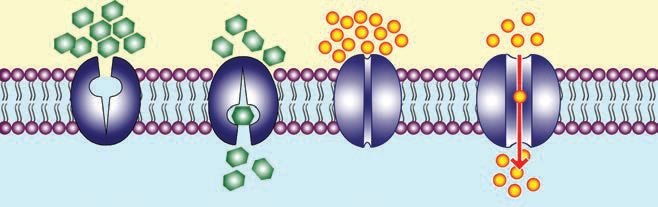<figcaption>Figure fig_ch01_p015_02 (Page 15)</figcaption></figure>
  <figure class="diagram-card" id="fig_ch01_p015_03">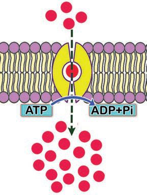<figcaption>Figure fig_ch01_p015_03 (Page 15)</figcaption></figure>
  <figure class="diagram-card" id="fig_ch01_p015_04"><figcaption>Figure fig_ch01_p015_04 (Page 15)</figcaption></figure>
  <figure class="diagram-card" id="fig_ch01_p015_05"><figcaption>Figure fig_ch01_p015_05 (Page 15)</figcaption></figure>
  <figure class="diagram-card" id="fig_ch01_p015_06"><figcaption>Figure fig_ch01_p015_06 (Page 15)</figcaption></figure>
  <figure class="diagram-card" id="fig_ch01_p015_07"><figcaption>Figure fig_ch01_p015_07 (Page 15)</figcaption></figure>
  <figure class="diagram-card" id="fig_ch01_p015_08"><figcaption>Figure fig_ch01_p015_08 (Page 15)</figcaption></figure>
  <figure class="diagram-card" id="fig_ch01_p015_09"><figcaption>Figure fig_ch01_p015_09 (Page 15)</figcaption></figure>
  <figure class="diagram-card" id="fig_ch01_p015_10"><figcaption>Figure fig_ch01_p015_10 (Page 15)</figcaption></figure>
  <div class="page-content">
    <p>zœ“”šȻc IX</p>
    <p>y qs§–›zÄ‚ŶšŅs‘¡} uš€‚š“DZ‚DZš–c
y qs§–›zÄ‚ŶšŅs‘¡}p’Ú›¡ź„›”</p>
    <p>šŽDZ
eÅ ‚ ¡}c
›ž
ǘŽĹ ¡‚c
eƼš •Ä
›‰DZž Œš#
†}ڝ¢ ž
s¡ĬĹ</p>
    <p>gŎśǫ ‚ŶšŅs‘¡} p’Úš§ ›‰DZž•Ä g‚›†§
jÅzcf“”DZŒ›Ƽ
x›ŅœsŽc 1.6, 1.7 mų›“  –žxsāÇچ–Ž›ă§ “›”s
†c ¡xƪ§ ˆ„šÅƒ “›†›ŒĹ›†§ –—šsŒš ŒǮŽĬ
Ƃ⛍s¡‘ڝ›ă§s›ƀ§‚ƭššÚž
øž¢Úš–›¡ź
uš€‚sž}‚Æ</p>
    <p>e¢šs‘¡}
uš€‚sž}‚Æ</p>
    <p>¢sš”ǘŽc
¢sš”ŝ“DZc</p>
    <p>“š—s¢ƂšĞœÄ</p>
    <p>xš†Æ¢ƂšĞœÄ</p>
    <p>¡‰–››¢ǮǮ§
›‰DZž•Ä
ƃš–§ŒšǘŽĹ›¡
x›¢ƂšĞœ†s‘¡}
–—šĹšÆ
†}ڝų jÅzc
f“”DZŒ›ƼšĹ
Ƃ⛍</p>
    <p>x›ŅœsŽc 1.6 ¡‰–››¢ǮǮ§›‰DZž•Ä</p>
    <p>“ā‘¡}uš€‚s“§</p>
    <p>¢sš”ǘŽc</p>
    <p>¢sš”ŝ“DZc</p>
    <p>“ā‘¡}uš€‚sž}‚Æ
¡}</p>
    <p>fܜ“§
ğšÄ¢ǜšÅЧ
ƃš–§ŒšǘŽĹ›¡
x›“š—s
¢ƂšĞœ†s‘¡}
–—šĹšÆ
†}ڝų jÅzc
f“”DZŒǫƂ⛍.</p>
    <p>x›ŅœsŽc1.7 fܜ“§ğšÄ¢ǜšÅЧ
y ‚ŶšŅs‘¡} uš€‚›¡ “DZ‚DZš–c
y ¢sš”Ĺ›†ǫ›¢Úǫ‚ŶšŅs‘¡}Ƃ¢“”†Ĺ›†§–—š›Úų 
ƃš–§ŒšǘŽĹ›¡ ¢ƂšĞœ†sÇ
y jÅzś¡źf“”DZs‚
15</p>
    <p></p>
  </div>
</section><section class="page-section" id="page-16">
  <div class="page-header"><span class="page-number">Page 16</span></div>
  <figure class="diagram-card" id="fig_ch01_p016_01"><figcaption>Figure fig_ch01_p016_01 (Page 16)</figcaption></figure>
  <figure class="diagram-card" id="fig_ch01_p016_02"><figcaption>Figure fig_ch01_p016_02 (Page 16)</figcaption></figure>
  <div class="page-content">
    <p>zœ“”šȻc IX</p>
    <p>ˆ„šÅƒ“›†›ŒĹ›†§ –—š›Úų Ƃ⛍sÇ iÇ¡ƀ}Ĺ›
“ÅÚ§•œǮ§ 1.1 ˆžÅśšÚs
‚ŶšŅs‘¡}
p’Ú›¡ź–ǵ‹š“c
uš€‚sž}›‹šuŝ†›ų§
sĚ‹šu¢ĹÚ§
uš€‚sĚ‹šuŝ†›ų§
sž}›‹šu¢ĹÚ§
zĹ›†§ŒšŅcŠš sc
jÅzc¢“Ĭ‚§
jÅzc¢“ĬšĹ‚§
“š—s¢ƂšĞœÄ¢“ĬšĹ‚§
“š—s¢ƂšĞœÄ
f“”DZŒš›“Žų‚§</p>
    <p>Ƃ⛍¡}¢ˆŽ§</p>
    <p>“ÅÚ§•œǮ§ 1.1 ˆ„šÅƒ“›†›ŒƂ⛍sÇ
¢sš”Ĺ›†ǫ›Æ ˆ„šÅƒs›ss¡‘ mśڝų‚›†c
e“›¡}†›ų§ ˆ¢ĹÚ§ ¡sšĬ“Žų‚›†c ƃš–§ŒšǘŽc
“—›Úų ˆÿ§ ¢Šš DZŒš¢Ƽš</p>
    <p>¢ˆš•sā‘¡}i“›}c
¡ŒǮš¡Šš‘›–Ĺ›†§¢ˆš•sv}sāÇsž}›¢‚œŽžzŦÚÇÚ§
g“‹›Úų‚§mā¡†š§#––DZāǢښ#


ns¢sš” Š—
¢sš”zœ“›sÇ iÇ¡ƀ
} ų
“ › ‹ š u Œ š §
fÆusÇ e“Ʃc
¢ƂšsšŽ›¢šĞs‘š
Ɨž÷œÄfÆusÇڝc
¢ ˆ š • s ā Ç  ‹ DZŒ š
sų‚§ Ƃsš”–c¢Nj
•Ĺ›ž¡}š§</p>
    <p>––DZāÇf—šŽc†›Åƣ›ÚųƂ⛍š¢ƼšƂsš”–c¢Nj
•c(Photosynthesis)
Ƃsš”–c¢Nj•Ĺ›†§f“”DZŒšv}sāǐ›ǡ§ ¡xƭž</p>
    <p>Ѣ㚢š‰›Æ
Ñ</p>
    <p>Ñ
Ñ</p>
    <p>x›ŅœsŽc 1.8†›Žœä›ă§ Ƃsš”–c¢Nj•Ĺ›Ç¡ƀ}ų
‹šuā¡‘ڝ›ă§ –žxsā‘¡} e}›Ǚš†Ĺ›Æ xÅă¡xƪ§
s›ƀ§‚ƭššÚž
16</p>
  </div>
</section><section class="page-section" id="page-17">
  <div class="page-header"><span class="page-number">Page 17</span></div>
  <figure class="diagram-card" id="fig_ch01_p017_01"><figcaption>Figure fig_ch01_p017_01 (Page 17)</figcaption></figure>
  <figure class="diagram-card" id="fig_ch01_p017_02"><figcaption>Figure fig_ch01_p017_02 (Page 17)</figcaption></figure>
  <figure class="diagram-card" id="fig_ch01_p017_03">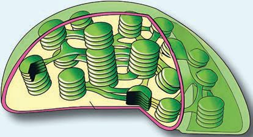<figcaption>Figure fig_ch01_p017_03 (Page 17)</figcaption></figure>
  <figure class="diagram-card" id="fig_ch01_p017_04"><figcaption>Figure fig_ch01_p017_04 (Page 17)</figcaption></figure>
  <figure class="diagram-card" id="fig_ch01_p017_05">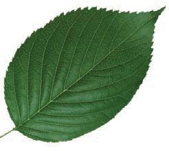<figcaption>Figure fig_ch01_p017_05 (Page 17)</figcaption></figure>
  <figure class="diagram-card" id="fig_ch01_p017_06">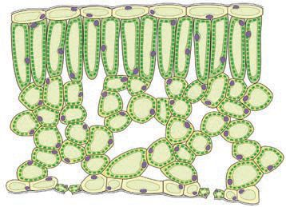<figcaption>Figure fig_ch01_p017_06 (Page 17)</figcaption></figure>
  <figure class="diagram-card" id="fig_ch01_p017_07"><figcaption>Figure fig_ch01_p017_07 (Page 17)</figcaption></figure>
  <figure class="diagram-card" id="fig_ch01_p017_08"><figcaption>Figure fig_ch01_p017_08 (Page 17)</figcaption></figure>
  <figure class="diagram-card" id="fig_ch01_p017_09"><figcaption>Figure fig_ch01_p017_09 (Page 17)</figcaption></figure>
  <figure class="diagram-card" id="fig_ch01_p017_10"><figcaption>Figure fig_ch01_p017_10 (Page 17)</figcaption></figure>
  <figure class="diagram-card" id="fig_ch01_p017_11"><figcaption>Figure fig_ch01_p017_11 (Page 17)</figcaption></figure>
  <figure class="diagram-card" id="fig_ch01_p017_12"><figcaption>Figure fig_ch01_p017_12 (Page 17)</figcaption></figure>
  <figure class="diagram-card" id="fig_ch01_p017_13"><figcaption>Figure fig_ch01_p017_13 (Page 17)</figcaption></figure>
  <figure class="diagram-card" id="fig_ch01_p017_14"><figcaption>Figure fig_ch01_p017_14 (Page 17)</figcaption></figure>
  <figure class="diagram-card" id="fig_ch01_p017_15"><figcaption>Figure fig_ch01_p017_15 (Page 17)</figcaption></figure>
  <figure class="diagram-card" id="fig_ch01_p017_16"><figcaption>Figure fig_ch01_p017_16 (Page 17)</figcaption></figure>
  <figure class="diagram-card" id="fig_ch01_p017_17"><figcaption>Figure fig_ch01_p017_17 (Page 17)</figcaption></figure>
  <figure class="diagram-card" id="fig_ch01_p017_18"><figcaption>Figure fig_ch01_p017_18 (Page 17)</figcaption></figure>
  <figure class="diagram-card" id="fig_ch01_p017_19"><figcaption>Figure fig_ch01_p017_19 (Page 17)</figcaption></figure>
  <figure class="diagram-card" id="fig_ch01_p017_20"><figcaption>Figure fig_ch01_p017_20 (Page 17)</figcaption></figure>
  <figure class="diagram-card" id="fig_ch01_p017_21"><figcaption>Figure fig_ch01_p017_21 (Page 17)</figcaption></figure>
  <figure class="diagram-card" id="fig_ch01_p017_22"><figcaption>Figure fig_ch01_p017_22 (Page 17)</figcaption></figure>
  <figure class="diagram-card" id="fig_ch01_p017_23"><figcaption>Figure fig_ch01_p017_23 (Page 17)</figcaption></figure>
  <figure class="diagram-card" id="fig_ch01_p017_24"><figcaption>Figure fig_ch01_p017_24 (Page 17)</figcaption></figure>
  <figure class="diagram-card" id="fig_ch01_p017_25"><figcaption>Figure fig_ch01_p017_25 (Page 17)</figcaption></figure>
  <div class="page-content">
    <p>zœ“”šȻc IX</p>
    <p>iˆŽ›ƽ‚›¢sš”āÇ</p>
    <p>Œœ¢–š‰›Æ¢sš”āÇ</p>
    <p>Šš—DZǘŽc
¡ǡš¢ŒǮ</p>
    <p>¢ãš¢šƃšǢ§</p>
    <p>{</p>
    <p>£‚¢Úš›§mųǘŽ–ĕ›</p>
    <p>fŦŽǘŽc</p>
    <p>÷š†£‚¢Úš›s‘¡}e}Ú§
¢ãš¢š‰›Æsš¡ƀ}ų</p>
    <p>–§¢ğšŒŝš“s‹šuc
–§¢ğšŒšš¡ŒƼ</p>
    <p>x›ŅœsŽc1.8 ¢ãš¢šƃšǡ›¡źv}†</p>
    <p>ST-267-2-BIOLOGY (M)-9-VOL-1</p>
    <p>y ¢ãš¢šƃšǡ›¡źv}†
y ¢ãš¢š‰›Ƽ›¡źǙš†c
y £‚¢Úš›§÷š†–§¢ğšŒ</p>
    <p>Ƃsš”–c¢nj•c(Photosynthesis)
Ƃsš”–c¢Nj•Ĺ›†§ ŽĬvĞā‘Ĭ§ x›ŅœsŽc 1.9
†Æs››Ğǫ “›“ŽāÇ mų›“ “›”s†c ¡xƪ§ ˆĞ›s 1.2
ˆžÅśšÚs</p>
    <p>17</p>
  </div>
</section><section class="page-section" id="page-18">
  <div class="page-header"><span class="page-number">Page 18</span></div>
  <figure class="diagram-card" id="fig_ch01_p018_01"><figcaption>Figure fig_ch01_p018_01 (Page 18)</figcaption></figure>
  <figure class="diagram-card" id="fig_ch01_p018_02"><figcaption>Figure fig_ch01_p018_02 (Page 18)</figcaption></figure>
  <figure class="diagram-card" id="fig_ch01_p018_03"><figcaption>Figure fig_ch01_p018_03 (Page 18)</figcaption></figure>
  <figure class="diagram-card" id="fig_ch01_p018_04"><figcaption>Figure fig_ch01_p018_04 (Page 18)</figcaption></figure>
  <figure class="diagram-card" id="fig_ch01_p018_05"><figcaption>Figure fig_ch01_p018_05 (Page 18)</figcaption></figure>
  <div class="page-content">
    <p>zœ“”šȻc IX</p>
    <p>–žŽDZƂsš”c</p>
    <p>zc</p>
    <p>sšÅŠÃ£qs§£–§</p>
    <p>ATP</p>
    <p>÷š†</p>
    <p>–§¢ğšŒ</p>
    <p>£—ĦzÄ
øž¢Úš–§</p>
    <p>qs§–›zÄ</p>
    <p>gŽĬvĞc</p>
    <p>Ƃsš”vĞc</p>
    <p>†}ڝų
–§¢ğšŒ›Æ“㧠†}ڝų
Ƃsš”ciˆ¢šu›Úų›Ƽ
hvĞś†§f“”DZŒš£—Ħz†c
jÅz“c (ATP)Ƃsš”vĞśÆ†›ųš§
‹›Úų‚§
£—Ħz†csšÅŠÃ£qs§£–c
¢xÅų§øž¢Úš–§iĬšsų</p>
    <p>÷š†›Æ“㧆}ڝų
Ƃsš”Ĺ›¡ź–šų› DZśÆ†}ڝų
zc“›v}›ă§ £—Ħz†c
qs§–›z†cfsų
qs§–›zĈŦǫų
£—ĦzÄ–§¢ğšŒ›¡Ĺų
jÅz‚ŶšŅšATPiĬšsų</p>
    <p>x›ŅœsŽc1.9 Ƃsš”–c¢Nj•Ĺ›¡vĞāÇ
Ƃsš”–c¢nj•c
–žx†</p>
    <p>Ƃsš”vĞc</p>
    <p>gŽĬvĞc</p>
    <p>Ƃ“Åņc†}ڝų
Ǚš†c</p>
    <p>¡ŒÆ“›ÄsšÆ“›Ä
gŽĬvĞś¡
Ƃ“ÅņāÇ
“›”„œsŽ›ă‚›†§
1961ÆŽ–‚ũśÆ
¡†š¢ŠÆˆŽǗšŽc
‹›ă</p>
    <p>Ƃ“ÅņāÇ
iƈųāÇ</p>
    <p>ˆĞ›s1.2Ƃsš”–c¢Nj•Ĺ›¡vĞāÇ
18</p>
  </div>
</section><section class="page-section" id="page-19">
  <div class="page-header"><span class="page-number">Page 19</span></div>
  <figure class="diagram-card" id="fig_ch01_p019_01"><figcaption>Figure fig_ch01_p019_01 (Page 19)</figcaption></figure>
  <figure class="diagram-card" id="fig_ch01_p019_02"><figcaption>Figure fig_ch01_p019_02 (Page 19)</figcaption></figure>
  <div class="page-content">
    <p>zœ“”šȻc IX</p>
    <p>Ƃsš”–c¢Nj•Ĺ›†š“”DZŒšˆ„šÅƒā‘ciƈųā‘c
c¢Nj•
iÇ¡ƀ}Ĺ›x›ŅœsŽc1.10 ˆžÅśšÚž
Ƃsš”– ›†§
Ĺ
¡ų
sš”c‚ š#
Ƃ
DZ
Ž
ž
–
Ĭ
–žŽDZƂsš”c
ų¢
¢“¡Œ Ǯ›¡ź
................. + .................
................. + .................
¢ãš¢š‰›Æ
LED £ śÆ
Ƃsš” ¢Nj•c
c
x›ŅœsŽc1.10 Ƃsš”–c¢Nj•Ĺ›¡v}sāÇ
Ƃsš”– ¢Œš#
†}Ú
ž
s¡ĬĹ</p>
    <p>øž¢Úš–›Æ†›ų§ “›“› ¢ˆš•sāÇ</p>
    <p>Ƃsš”–c¢Nj• ‰ŒšĬšsųøž¢Úš–§e‚›¢“uczĹ›Æ›Úų‚¡sšĬ§
e‚§e¢ŒšeųzŒšÚ› (Starch)–c‹Ž›ÚųeųzśÆ†›ųš§––DZā‘¡}
zœ“ÆƂ“ÅņāÇÚ§ f“”DZŒšjÅzc‹›Úų‚§eųzc¡ŒǮš¡Šš‘›–Ĺ›†§
“›¢ Œš›†›Ž“ ›ˆ„šÅƒāÇiĬšsųx“¡} ¡sš}Ĺ›Ž›Úųx›ŅāÇ1.3,
1.4mų›“†›Žœä›ă§x›ŅœsŽc1.11 ˆžÅśšÚs</p>
    <p>“›“› 
¢ˆš•sā‘¡}
¢ǟš‚ǡ§</p>
    <p>eųzc</p>
    <p>Ƌ¢Üš–§</p>
    <p>–¢âš–§</p>
    <p>x›Ņc 1.3 sšÅ¢Šš£—¢ĦǮsÇ
19</p>
  </div>
</section><section class="page-section" id="page-20">
  <div class="page-header"><span class="page-number">Page 20</span></div>
  <figure class="diagram-card" id="fig_ch01_p020_01">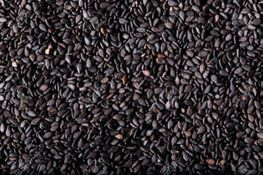<figcaption>Figure fig_ch01_p020_01 (Page 20)</figcaption></figure>
  <figure class="diagram-card" id="fig_ch01_p020_02"><figcaption>Figure fig_ch01_p020_02 (Page 20)</figcaption></figure>
  <figure class="diagram-card" id="fig_ch01_p020_03"><figcaption>Figure fig_ch01_p020_03 (Page 20)</figcaption></figure>
  <figure class="diagram-card" id="fig_ch01_p020_04">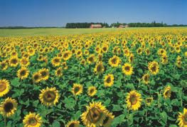<figcaption>Figure fig_ch01_p020_04 (Page 20)</figcaption></figure>
  <figure class="diagram-card" id="fig_ch01_p020_05"><figcaption>Figure fig_ch01_p020_05 (Page 20)</figcaption></figure>
  <figure class="diagram-card" id="fig_ch01_p020_06"><figcaption>Figure fig_ch01_p020_06 (Page 20)</figcaption></figure>
  <figure class="diagram-card" id="fig_ch01_p020_07"><figcaption>Figure fig_ch01_p020_07 (Page 20)</figcaption></figure>
  <figure class="diagram-card" id="fig_ch01_p020_08"><figcaption>Figure fig_ch01_p020_08 (Page 20)</figcaption></figure>
  <div class="page-content">
    <p>zœ“”šȻc IX</p>
    <p>¡sš’ƀ§</p>
    <p>¢ƂšĞœÄ</p>
    <p>“›ǮšŒ›†sÇ</p>
    <p>x›Ņc 1.4 ¡sš’ƀ§¢ƂšĞœÄ“›ǮšŒ›†sÇ
Ƃsš”–c¢Nj•c
øž¢Úš–§
eųzc
–ž¢âš–§</p>
    <p>“›ǮšŒ›†sÇ
x›ŅœsŽc1.11 øž¢Úš–›Æ†›ų§“›“› ¢ˆš•sāÇ
––DZāÇÚ§ ¢ˆš•sāÇ ‹DZŒšsų¡‚ā¡† mų§ Œ†Ǡ›š›¢Ƽ# h
¢ˆš•sā¡‘š§ŒǮ§zœ“›sÇzœ“ÆƂ“ÅņāÇښ›–ǴœsŽ›Úų‚§
¢ˆš•¡Ĺc ¢ˆš•sā¡‘c s›ă§ †›āÇڏ›šc ¢ˆš•sv}sāÇ
n¡‚š¡Úš¡ų§›ǡ§ ¡xƭž
y
š‚ÚÇ
y

y zc
y
y
y
20</p>
  </div>
</section><section class="page-section" id="page-21">
  <div class="page-header"><span class="page-number">Page 21</span></div>
  <figure class="diagram-card" id="fig_ch01_p021_01"><figcaption>Figure fig_ch01_p021_01 (Page 21)</figcaption></figure>
  <div class="page-content">
    <p>zœ“”šȻc IX</p>
    <p>––DZāÇ¡ŒǮš¡Šš‘›–Ĺ›ž¡}
†›Åƣ›Úų ¢ˆš•sāÇ
f—šŽĹ›ž¡}
––DZ‹Ús‘›¡Ĺų
––DZ‹Ús¡‘Œšc–‹ÚsÇ
f—šŽŒšÚų––DZā¡‘
–Ǵ¢ˆš•›sÇmųc
zŦÚ¡‘ ˆŽ¢ˆš•›s¡‘ųc
“›‘›Úų‚§mŦ¡sšĬš¡ų§
Œ†Ǡ›š¢Ƽš
sŽ›¡¢ƀš¡zĹ›c
––DZāÇ“‘ŽųĬ§
–ŒŝścŒǮ
zš”ā‘›Œǫiƈš„sÅ
f¡ŽƼšŒš§#


eŦŽœäś¡qs§–›z¡ź
†¡ƼšŽ‹šuc–Œŝś¡
iƈš„sŽš§ˆŦǫų‚§
Œ›†œsŽŒš§–Œŝ
f“š–“DZ“ǙsÇ¢†Ž›}ų
s}Ĺ‹œ•›‚Ŷžczœ“›sÇ
“Ä¢‚š‚›Æ“c”ŒǮ ¢ˆšsų</p>
    <p>–ŒŝcpŽ “›–§Œc
‹žŒ›¡} †š›Ƴ Œžų ‹šu“c –ŒŝŒš§
äځڛ†§ zœ“zš‚›s‘c †›Ž“ › f“š
–ā‘ce“›ƳiÇ¡ƀĞ›Ž›Úų–žŽDZƂsš
”Ĺ›¡ź‹DZ‚Ʃ§e†–Ž›ă§–Œŝ¡Ĺ Œžų
¢Œts‘š›‚›Ž›ă›ĞĬ§iˆŽ›‚cŒ‚Ƴ200
ŒœǮư“¡Žf’Ĺ›Ƴž¢‰šĞ›s§¢Œt(Euphotic
Zone). †ųš› –žŽDZƂsš”c ‹›Úų‚›†šÆ
šŽš‘c zœ“›sǪ h ¢Œt›Ƴ zœ“›Úų
Ĭ§200 ŒœǮ›†‚š¡’ 1000 ŒœǮư“¡Ž ›¢ǝšĞ›
s§¢Œt(Dysphotic Zone).g“›¡}Ƃsš”‹DZ‚
ˆŽ›Œ›‚Œš¡ÿ›c ––DZ¢sůœÕ‚Œš zœ“
zš›sš§ (Web of life) g“›¡}c f›Žc
ŒœǮ›†§ ‚š¡’m¢‰šĞ›s§ ¢Œt (Aphotic Zone).
g“›¡} ‹DZŒš –žŽDZƂsš”Ĺ›¡ź e‘“§
“‘¡Ž s“š‚›†šÆ Ƃsš”–c¢Nj•c
†}ڛƼmųšÆg“›¡}ǫ x›zœ“›sÇÚ§
Ƃsš”ciƈš„›ƀ›Úšťs’›c
¢ŒÆĹĞ›ǫ zœ“›s‘¡} Ɯ‚š“”›Ǐā‘š
§ m¢‰šĞ›s§ ¢Œt›¡ zŦÚǪ f—šŽ
ŒšÚų‚§ Žš––c¢Nj•c (Chemosynthesis)
†›Å“—›Úų x› ŠšÜœŽ›s‘c g“›¡}
Ĭ§   2050 fs¢Ơš¢’ڝc –Œŝś¡
ŒŇDZ–Ơś¡ź ‹šŽ¡Ĺ e“›¡}¡Ĺų
ƃšǡ›Ú›¡ź ‹šŽc ˆ›Ŧǫ¡Œų UNO ¡}
Ƃ“x†c ¡|А‘“šÚų‚š§ –Œŝc pŽ
“›–§Ɯ‚›š“š¡‚“›–§ŒŒš›Œ†•DZx›Ŧ¡
g†›cƂ¢xš„›ƀ›Ú¡Ğ</p>
    <p>–ŒŝŒ›†œsŽc‚}šÄ
–ǴœsŽ›¢ÚĬ†}ˆ}›sÇ
m¡ŦƼšŒš§#xÅă¡xƭž
f—šŽ“cqs§–›z†c
ŒšŅŒš¢š––DZāÇƂ„š†c
¡xƭų‚§#‚ų›Ž›Úų
x›ŅœsŽc 1.12, “›“Žc
mų›““›”s†c¡xƪ§
†›uŒ†cŽžˆœsŽ›Úž</p>
    <p>21</p>
  </div>
</section><section class="page-section" id="page-22">
  <div class="page-header"><span class="page-number">Page 22</span></div>
  <figure class="diagram-card" id="fig_ch01_p022_01"><figcaption>Figure fig_ch01_p022_01 (Page 22)</figcaption></figure>
  <figure class="diagram-card" id="fig_ch01_p022_02"><figcaption>Figure fig_ch01_p022_02 (Page 22)</figcaption></figure>
  <figure class="diagram-card" id="fig_ch01_p022_03"><figcaption>Figure fig_ch01_p022_03 (Page 22)</figcaption></figure>
  <figure class="diagram-card" id="fig_ch01_p022_04"><figcaption>Figure fig_ch01_p022_04 (Page 22)</figcaption></figure>
  <figure class="diagram-card" id="fig_ch01_p022_05"><figcaption>Figure fig_ch01_p022_05 (Page 22)</figcaption></figure>
  <figure class="diagram-card" id="fig_ch01_p022_06"><figcaption>Figure fig_ch01_p022_06 (Page 22)</figcaption></figure>
  <figure class="diagram-card" id="fig_ch01_p022_07"><figcaption>Figure fig_ch01_p022_07 (Page 22)</figcaption></figure>
  <figure class="diagram-card" id="fig_ch01_p022_08">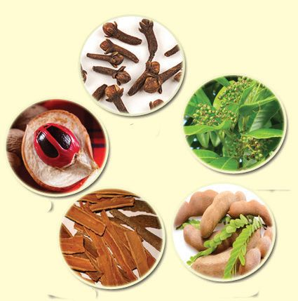<figcaption>Figure fig_ch01_p022_08 (Page 22)</figcaption></figure>
  <figure class="diagram-card" id="fig_ch01_p022_09">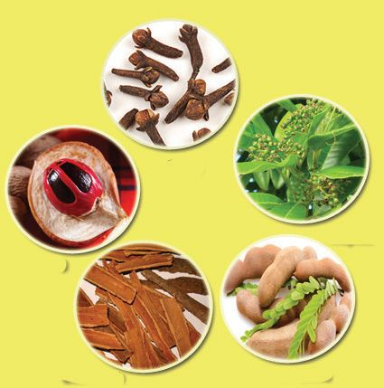<figcaption>Figure fig_ch01_p022_09 (Page 22)</figcaption></figure>
  <figure class="diagram-card" id="fig_ch01_p022_10"><figcaption>Figure fig_ch01_p022_10 (Page 22)</figcaption></figure>
  <div class="page-content">
    <p>zœ“”šȻc IX</p>
    <p>r• āÇ
ƔŐšǮs§–§</p>
    <p>£z“sœ}†š”›†›</p>
    <p>–uŰŝ“DZāÇ</p>
    <p>ˆš†œāÇ</p>
    <p>x›ŅœsŽc1.12 ––DZā‘¡}–šƠśsƂš š†DZc</p>
    <p>sĬÆښ}§ƂՂ›¡}“Ž„š†c
sšc s}c ¢xŽų ‹šuŚ§
sĬÆښ}sÇ sš¡ƀ}ų‚§
iƀ¡“ǫśÆ “‘Žų 43 g†c
sĬÆ––DZāÇ¢sŽ‘Ĺ›ÆiĬ§
†ƣ¡}–cǙš†Ĺ§ 1975Æ 70000
¡—ÜÅ sĬÆښ}§ iĬš›Žų
e‚›Æ”‚Œš†“c†”›ƀ›Ú¡ƀН
eŒžDZŒš ¢–“†āÇ f§
sĬsLjŽ›Ǚ›‚›Ú§†ƴų‚§
y ŒŇDZ–Ơś¡źi“›}c
y £z“£““› DZś¡źs“
y ‚œŽƂ¢„”¡ĹŒĴ§–cŽäc
y †›‚DZ—Ž›‚“†ā¡‘e¢ˆä›ă§†šĕ›ŽĞ›sšÅŠÃ£qs§£–›¡†
fu›Žc¡xƭų‚›ž¡}f¢uš‘‚šˆ†Ĺ›¡†‚›¡ŽǫƂ‚›¢Žš c
y –†šŒ›¡‚}Æ
22</p>
  </div>
</section><section class="page-section" id="page-23">
  <div class="page-header"><span class="page-number">Page 23</span></div>
  <figure class="diagram-card" id="fig_ch01_p023_01"><figcaption>Figure fig_ch01_p023_01 (Page 23)</figcaption></figure>
  <figure class="diagram-card" id="fig_ch01_p023_02"><figcaption>Figure fig_ch01_p023_02 (Page 23)</figcaption></figure>
  <div class="page-content">
    <p>zœ“”šȻc IX</p>
    <p>mĴ›š¡š}āšĹ¢–“†ā‘š§
––DZā‘›Æ †›ų§ ƂՂ›Úc
Œ†•DZ†c ‹›ă¡sšĬ›Ž›Úų‚§
mų§ Œ†Ǡ›š¢Ƽš e‚›¡ź
x› –žx†sÇ ŒšŅŒš§ Œs‘›Æ
†Æs››Ğǫ‚§ sž}‚Æ “›“Ž
¢”tŽc †}ś ϖ–DzāÇ zœ“
ŒįĹ›¡ź –cŽäsÅÎÎ mų
“›•¡Ĺ fǜ„ŒšÚ› ¡–Œ›†šÅ
–cv}›ƀ›Úž</p>
    <p>s¢ƽÄ¡ˆšÚ}Ä(1937-2015)
sĬÆښ}s‘¡}
–cŽäĹ›ž¡}
e“¡}ˆšŽ›Ǚ›
‚›s Ƃš š†DZc
¢Šš DZ¡ƀ}Ĺ›
ˆŽ›Ǚ›‚› Ƃ“Å
Ĺs†š§ s¢ƼÄ
¡ˆšÚ}Ä pŽ
 ä Ĺ › ¢  ¡ 
s Ĭ Æ £ ‚ s Ç
†Ğˆ›}›ƀ›ă e¢Ŕ
—c sĬs¡‘ e“¡} –Ǵš‹š“›s
f“š–“DZ“Ǚ›Æ “‘ŽšÄ e†“
„›Ú¡Œų†›ˆš}§iÅśƀ›}›ăˆ
Ǚā‘›c†}śsĬÆ–cŽä
Ƃ“ÅņāÇÚ§  ecuœsšŽ¡Œ¢ųšc
e¢Ŕ—¡Ĺ sĬÆ ¡ˆšÚ}Ä mų
“›‘›ă ƂՂ›¢š}ǫ ¢Ǜ—c sĬÆ
ښ}s‘¡}–cŽäĹ›ž¡}¡‚‘››ă
e¢Ŕ—Ĺ›¡ź fŃsƒš§  ÍsĬÆ
ښ}sÇڛ}›Æ m¡ź zœ“›‚cÎ
¡†¢Ǘš¡} ˆšŽ›Ǚ›‚›s Ƃ“Åņ
“›‹šucsĬÆښ}s‘¡}–cŽäĹ›Æ
e¢Ŕ—Ĺ›¡ź ¢ˆŽ§  ˆŽšŒÅ”›ă›ĞĬ§ 
sĬs¡‘ڝ›ă§ˆ~›ÚšÄpŽǗžÇmų
–ǴſcŠšÚ›“㚁§e¢Ŕ—cšŅš‚§</p>
    <p>iˆ“›•āÇ
y ––DZā‘¡}–šƠśs
Ƃš š†DZc
y ––DZā‘¡}
ˆšŽ›Ǚ›‚›sƂš š†DZc
xÅ㍝¡} e}›Ǚš†Ĺ›Æ Ƃš¢„
”›s –“›¢”•‚sÇ ˆŽ›u›ă§
iˆ“›•ā‘¡} iǫ}ÚśÆ ¢‹„
u‚›“ŽĹš“ų‚š§
zœ“ŒįĹ›Æ ––DZā‘¡}
Ǚš†¡ĹƀǮ›c ˆÿ›¡†Ú›ăc
–Œ÷Œš e›“§  ¡–Œ›†š›ž¡}
fÅz›ă“¢Ƽš</p>
    <p>zœ“ŒįĹ›¡źe}›Ǚš†”›s‘š§––DZāÇ––DZāÇÚ§
–c‹“›Úų¢”š•cf‚DZŦ›sŒš›zœ“¡ź†›†›Æƀ›¡†
‚¡ųŠš ›Úc–Ǚ›Ž“›s–†cmųsš’§xƀš}§––DZā¡‘
sž}› ˆŽ›u›ă¡sšĬš§  Žžˆ¡ƀ}Ĺ››Ğǫ‚§   g‚§
–š DZŒšs¡Œÿ›Æ ˆŽ›Ǚ›‚›¢Šš śÆ jų›
Ƃ“ÅņāÇ ¢“Ĭ›“Žc e‚›†§ †š¢Œš¢ŽšŽĹŽc
–ċŽš¢sĬ‚Ĭ§ ”šȻ¢Šš śÆ e ›ǐ›‚Œš
ˆšŽ›Ǚ›‚›s sš’§ x ƀš}§  zœ“›‚Ĺ›Æ –ǴœsŽ›ăš¢ e‚§
–š DZŒšsž</p>
    <p>23</p>
  </div>
</section><section class="page-section" id="page-24">
  <div class="page-header"><span class="page-number">Page 24</span></div>
  <figure class="diagram-card" id="fig_ch01_p024_01"><figcaption>Figure fig_ch01_p024_01 (Page 24)</figcaption></figure>
  <figure class="diagram-card" id="fig_ch01_p024_02"><figcaption>Figure fig_ch01_p024_02 (Page 24)</figcaption></figure>
  <figure class="diagram-card" id="fig_ch01_p024_03"><figcaption>Figure fig_ch01_p024_03 (Page 24)</figcaption></figure>
  <figure class="diagram-card" id="fig_ch01_p024_04"><figcaption>Figure fig_ch01_p024_04 (Page 24)</figcaption></figure>
  <div class="page-content">
    <p>zœ“”šȻc IX</p>
    <p>“››ŽĹšc
 ˆăŒĞ¡}c ˆ’ā› ŒĞ¡}c Šš—DZǘŽ¡Ĺ
x“¡} ¡sš}Ĺ›Ž›Úų–žxsāÇiˆ¢šu›ă§‚šŽ‚ŒDZc
¡xƭs
Ñ ‚šŽDZ–Ǵ‹š“c
Ñ q–§¢Œš–›–›¡ź–š DZ‚
Ñ fܜ“§ğšÄ¢ǜšÅĞ›¡ź–š DZ‚
 Ƃsš”–c¢Nj•Ĺ›Æqs§–›zĈŦǫ¡ƀ}ų¡‚ā
¡† mų ¢xš„DZś†§ pŽ sĞ› m’‚› iŎc
x“¡} †ƴ››Ž›Úų e‚§ “››ŽĹ› e‹›Ƃšc
¢Žt¡ƀ}Ĺs
sšÅŠÃ£qs§£–cz“Œš§Ƃsš”–c¢Nj•
ś¡ź e–cȾ‚ “ǘÚÇ e“ ŽĬc “›v}›ă§
qs§–›zĈŦǫ¡ƀ}ų
 ÍƂsš”–c¢Nj•c f‚DZŦ›sŒš› e†š¡Šš‘›–c
f¡ÿ›c e‚›Æ sǮš¡Šš‘›–“c iÇ¡ƀĞ›Ž›ÚųÎ
hƂǘš“†“›”s†c¡xƭs</p>
    <p>‚}ÅƂ“ÅņāÇ
 ˆŽ›Ǚ›‚›Ƃ“ÅņāÇښ› zœ“›‚c ¡x“›Ğ p¢Ğ¡
¢ˆŽĬ§e“¡ŽƀǮ›ǫ“›“ŽāÇ¢”tŽ›ă§pŽfƊc
‚ƭššÚs
 xǮˆš}c sšų ––DZā¡‘ †›Žœä›ă§ x“¡}
¡sš}Ĺ›Ž›Úų ˆĞ›sˆžÅśšÚs</p>
    <p>––DzāÇ
¡‚ā§</p>
    <p>ŒžDz“Å ›‚
iƈųāÇ
¡“‘›¡ăĴ
ŒŽų§</p>
    <p>24</p>
    <p>iˆ¢‹šuc
ˆšxsś†§</p>
  </div>
</section><section class="page-section" id="page-25">
  <div class="page-header"><span class="page-number">Page 25</span></div>
  <figure class="diagram-card" id="fig_ch01_p025_01"><figcaption>Figure fig_ch01_p025_01 (Page 25)</figcaption></figure>
  <div class="page-content">
    <p>zœ“”šȻc IX</p>
    <p>„—†“c
¢ˆš•s–c“—†“c</p>
    <p>y „—†“Dz“ǚ
y „—†c
y ¢ˆš•sšu›Žc
y “›ƽ–›¡źv}†</p>
    <p>y ŽÞś¡źv}†
y ǣ„c
y ǣ„š¢ŽšuDzc
y ––Dzā‘›¡–c“—†c
25</p>
  </div>
</section><section class="page-section" id="page-26">
  <div class="page-header"><span class="page-number">Page 26</span></div>
  <figure class="diagram-card" id="fig_ch01_p026_01"><figcaption>Figure fig_ch01_p026_01 (Page 26)</figcaption></figure>
  <div class="page-content">
    <p>zœ“”šȻc IX</p>
    <p>ǗžÇ iă‹äˆŗ‚›Œš› ŠŰ¡ƀЧ †Æs› x›Ņc
NJŗ›ă¢Ƽš †›ā‘¡} f¢ŽšuDZc iƀ“ŽĹų‚§ ¢ˆš•s
–ƜŗŒš‹äŒš¢Ƽš
†›ā‘¡}iă‹äĹ›Æm¡Ŧš¡Ú“›‹“ā‘š§iÇ¡ƀ}
ś›Ž›Úų‚§#›ǡ§¡xƭž
‚ƭššÚ››ǡ§“›”s†c¡xƪ§ˆĞ›s 2.1 ˆžÅśšÚs
¢ˆš•sv}sāÇ</p>
    <p>‹äDz“ǙÚÇ</p>
    <p>Åƣc</p>
    <p>š‚ÚÇ
zc</p>
    <p>ˆĞ›s2.1 ¢ˆš•sv}sāÇ
¢šsś¡ź“›“› ‹šuā‘›Æiǫ“Ž¡}‹äŽœ‚›sÇ“DZ
‚DZǘŒš¡ÿ›cf¢ŽšuDZś†§ ‹äĹ›Æ†šŽsÇzc
mų›“Ʃ§ˆ¢ŒsšÅ¢Šš£—¢ĦǮ§¢ƂšĞœÄ¡sš’ƀ§ š‚
ÚÇ “›ǮšŒ›Ä mųœ ¢ˆš•sv}sāÇ †›ÅŠŰŒšc e}
ā››Ž›ÚcmƼš¢ˆš•sv}sā‘c”Ž›še†ˆš‚
śÆ‹›Úų‹äŒš§–ŒœÕ‚š—šŽc(Balanced diet)
26</p>
  </div>
</section>
    </main>
    <footer>
      <div class="nav-bar"><span class="nav-bar disabled"></span><a href="index.html">☰ Index</a><a href="part_1_chapter_02.html">Chapter 2 (Pages 27-46) →</a></div>
      <p style="text-align: center; font-size: 0.85rem; color: var(--text-muted); margin-top: 2rem;">
        Kerala SCERT Class 9 Biology (Malayalam Medium) - Extracted Study Text
      </p>
    </footer>
  </div>
</body>
</html>
